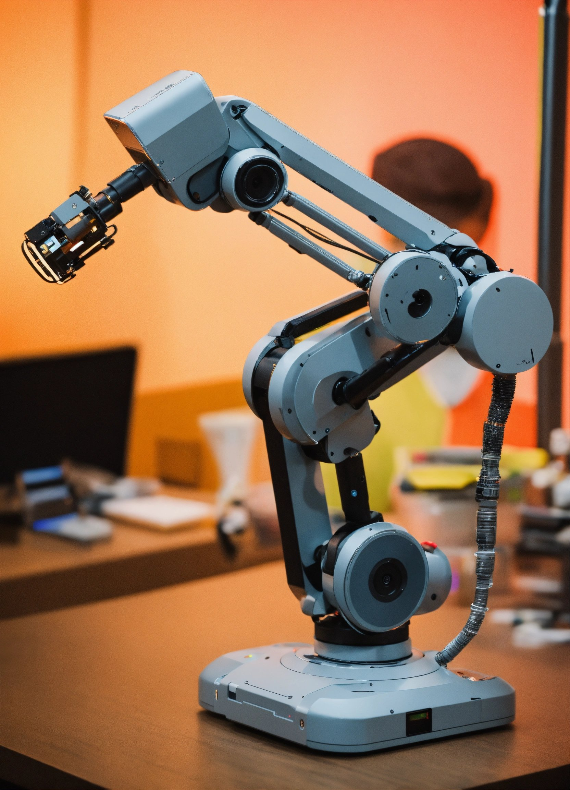
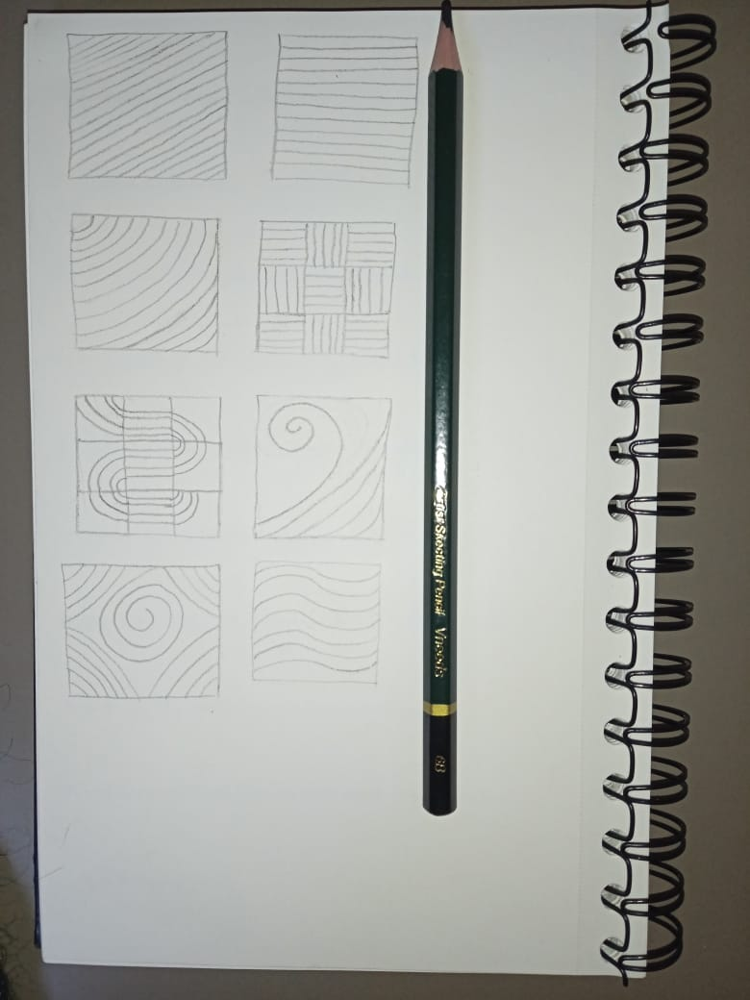

Art direction · Web design
Meridian
A digital home for ideas that do not sit still.

The challenge
Make room
for curiosity.
Meridian is a research-led platform for people who think across disciplines. Its old digital presence had plenty to say, but the experience made every idea feel equally loud.
The opportunity was to build a calmer, more editorial space: one that could hold complex conversations while still making the first click feel inviting.
Our approach
Designed like
a conversation.
We designed a typographic interface with generous pacing, warm transitions, and a visual rhythm inspired by margins, footnotes, and the quiet energy of a well-used notebook. The result gives every story enough space to become memorable.
Start a similar project
The outcome
02 / 03Less friction
A clearer information architecture helps visitors find the right depth for their curiosity.
More atmosphere
Editorial pacing turns a content-heavy platform into a place people want to spend time in.
A living framework
Modular layouts allow the Meridian team to publish new thinking without losing the character of the experience.